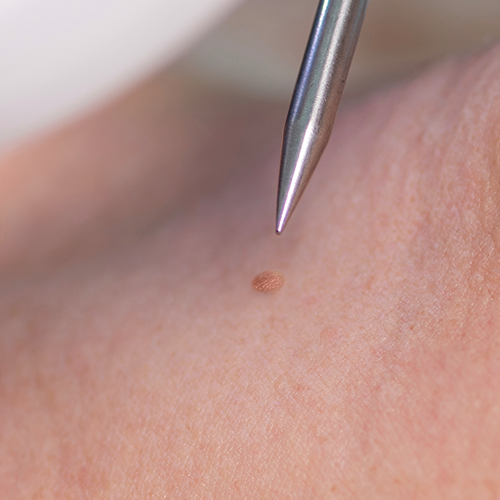
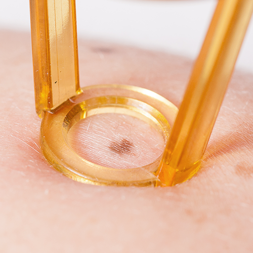
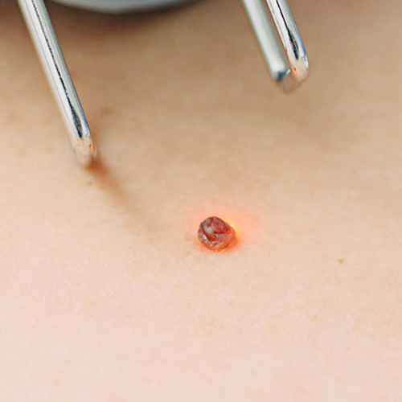
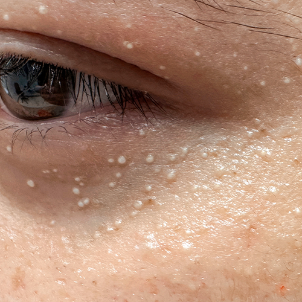
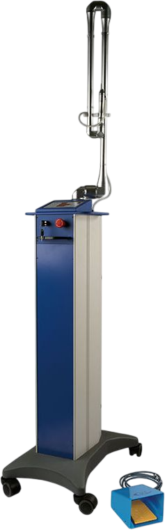

Moles, Skin Tags & Warts
The start of clear skin, as if they were never there
A CO2 laser treatment that improves moles, skin tags, warts, and milia while effectively evening out the skin overall. Medical Bloom's epidermal lesion care is performed in a way that does not harm the surrounding skin, minimizing damage to skin tissue and easing worries about scarring.

What is CO2 laser?
The CO2 laser works with precision tailored to the skin's condition
to manage lesions effectively, minimizing irritation to the surrounding skin while enabling more stable lesion removal.


Warts
A viral skin condition in which the skin proliferates due to human papillomavirus (HPV) infection. It occurs on various areas such as the hands, feet, and face, and can spread through contact.
Picking at or removing warts on your own can cause them to spread to nearby skin or recur, so professional treatment is essential.
Moles A pigmented lesion in which melanin gathers locally in the skin. It can be congenital, but may also develop later due to factors such as UV rays and skin irritation, varying in color, size, and depth.
Scratching a mole or removing it with a blade or needle risks scarring, pigmentation, and recurrence, so accurately diagnosing the mole's type and depth is important.
Skin tags A soft cutaneous fibroma that appears when skin fibers grow abnormally. Removing a skin tag at home with nail clippers or the like risks bacterial infection, so it is safest to have it removed after an accurate clinical diagnosis.
Milia A white or yellow keratin cyst that appears as small bumps when dead skin cells or sebum become trapped within the skin. Squeezing milia by hand or removing them with a needle can leave inflammation, pigmentation, and scarring, so safe removal after an accurate diagnosis of the skin's condition is necessary.


Advantages of the CO2 Laser
The CO2 laser, used to remove moles, skin tags, and warts,
delivers light energy of a specific wavelength that is selectively absorbed by the lesion, allowing precise and safe treatment.
1. Removal of Surface Lesions Lesions located on or near the skin's surface, such as moles, milia, warts, and skin tags, can be selectively removed without damaging the surrounding healthy tissue.
2. Precise Energy Delivery With minimal heat diffusion, the CO2 laser minimizes irritation to healthy skin outside the treatment area.
It involves less pain and fewer side effects, and can be used even on sensitive areas.
3. Reduced Risk of Scarring and Pigmentation Minimal tissue damage lowers the risk of excessive scarring or pigmentation, and effectively supports the skin's natural healing process.
4. Fast Recovery and Return to Daily Life With a short recovery period, you can quickly return to your daily routine, making it easy even for busy professionals to receive treatment.
Medical Bloom's mole, skin tag, and wart treatment
takes precise lesion removal, safety, and recovery into account, providing customized care tailored to each individual's skin condition and lesion characteristics.
Precise lesion removal Recovery-focused care 1:1 customized treatment
Who Is the CO2 Laser Recommended For?
Those troubled by pigmentation
Those bothered by surface concerns such as moles and milia more even skin tone who want clean, clear skin Those concerned that visible lesions make their skin look uneven Those who need gentle, worry-free scar removal Those worried about post-treatment marks or pigmentation Those who value skin regeneration, not just removal Those who want both skin recovery and regeneration after lesion removal

With an approach tailored to each individual,
we deliver clear skin through precise care.
Experience it now at Medical Bloom.
To bring you the healthiest form of beauty —
The Promise of Medical Bloom Korean Medicine Clinic
1:1 Skin Condition & Design Consultation
Through an in-depth consultation with our director, we carefully assess your areas of concern, skin condition, and unique skin characteristics. Considering both the beauty you envision and the condition of your face, we propose the personal face design that suits you best.
From Our Two Korean Medicine Directors,
Special Dedicated Care
From consultation to treatment, we care for your skin as if it belonged to our own family — with unmatched attention and delicacy. By bringing a Korean-medicine perspective to aesthetic skincare and adding stimulation of blood vessels and muscles, we achieve both health and beauty.
Healthy Beauty Without Side Effects
Your skin health and satisfaction are our highest priorities. To prevent any heartbreaking side effects after treatment, we take every precaution during examination and consultation, and insist on using only gentle, natural herbal ingredients for our herbal acupuncture injections and medicines.
Authentic Premium Devices and
Precisely Measured Treatments
Every device and product Medical Bloom uses is fully authentic, and each treatment is delivered in a customized, precise dose — never more, never less than your face needs.
Medical Bloom Korean Medicine Clinic